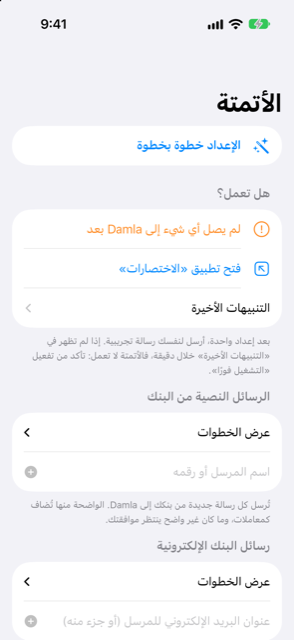

الدليل › الالتقاط التلقائي
الرسائل النصية من البنك والرسائل الإلكترونية
أرسل كل رسالة من البنك إلى Damla باستخدام اختصار.
تمرّر أتمتة في Shortcuts كل رسالة نصية أو إلكترونية جديدة من بنكك إلى Damla فور وصولها، فتُسجَّل لك المشتريات والمبالغ المستردة والدخل. تتصل ببنك واحد في كل مرة. يعرض Damla الخطوات بدقة، وتنشئ الأتمتة مرة واحدة في تطبيق Shortcuts.

متى تستخدمها
- يرسل بنكك رسالة نصية في كل مرة تنفق فيها أو تتلقى مبلغًا أو تشحن رصيدًا على بطاقة أو حساب.
- يرسل بنكك أيضًا تنبيهات المعاملات بالبريد الإلكتروني، وتريد تسجيلها هي أيضًا.
- تريد عددًا أقل من المدفوعات التي تُدخلها يدويًا.
- تريد سجلًا بما أُرسل إلى Damla وما فعله بكل رسالة.
الإجراءات التي يوفرها Damla في Shortcuts
تظهر إجراءات Damla الأربعة في تطبيق Shortcuts عند إضافة إجراء جديد:
- إضافة إلى Damla — له حقل النص وحقل المصدر (رسالة نصية، أو بريد إلكتروني، أو دفعة من Wallet).
- إضافة كشف حساب إلى Damla — يأخذ كشف حساب بصيغة PDF أو لقطة شاشة ويضعه في قائمة انتظار للمراجعة.
- إضافة دفعة بطاقة إلى Damla — يأخذ تاجرًا ومبلغًا وبطاقة (راجع مدفوعات Apple Pay وWallet).
- كم يمكنني أن أنفق — يجيب بتقديرك للمبلغ الآمن لإنفاقه، الذي يحسبه رمز التوقعات.
تسرد شاشة الأتمتة في Damla هذه الأسماء نفسها. في تطبيق Shortcuts، انقر إضافة إجراء، ثم تطبيقات، ثم Damla للعثور عليها. إذا كان أحدها مفقودًا هناك، افتح Damla، وأغلق تطبيق Shortcuts قسرًا ثم افتحه من جديد. إذا كان لا يزال مفقودًا، أعد تشغيل الـ iPhone.
خطوة بخطوة
أخبر Damla أولًا من هو بنكك، ثم أنشئ الأتمتة.
- افتح Damla، ثم الإعدادات، ثم رسائل البنك وكشوف الحساب، ثم الأتمتة (Shortcuts).
- في قسم "الرسائل النصية من البنك" (أو "رسائل البنك الإلكترونية")، اكتب اسم مرسل بنكك أو رقمه وانقر إضافة. في حالة البريد الإلكتروني، يكفي جزء من عنوان بريد المرسل الإلكتروني.
- انقر على مدخل بنكك في القائمة لرؤية الخطوات بدقة. استخدم أزرار النسخ إن كان ذلك مفيدًا: أحدها ينسخ الخطوات، وآخر موجّهًا لـ Apple Intelligence في تطبيق Shortcuts، وثالث اسم مرسل بنكك، حتى لا يُخطأ في كتابة شيء.
- اتبع الخطوات في تطبيق Shortcuts: انقر الأتمتة، ثم زر الإضافة، ثم اختر رسالة (أو بريد إلكتروني).
- تحت المرسل، اختر بنكك. اترك "تحتوي الرسالة على" فارغًا.
- اختر التشغيل فورًا، ثم التالي.
- اختر أتمتة فارغة جديدة، وانقر إضافة إجراء، وابحث عن إضافة إلى Damla واختره.
- اضبط النص له على Shortcut Input، بحيث تُمرَّر الرسالة نفسها.
- اضبط المصدر على رسالة نصية (أو بريد إلكتروني، ليعرف Damla من أين جاءت).
- انقر تم. أطفئ الإخطار عند التشغيل إذا ظهر.
ماذا يحدث لكل رسالة
- الشراء أو المبلغ المسترد أو الدخل الواضح الذي تطابق أرقام بطاقته أو حسابه أحد حساباتك يُضاف كمعاملة فورًا.
- الرسالة غير الواضحة، أو البطاقة المجهولة، أو التحويل إلى أقساط، أو إشعار كشف حساب تنتظر في صندوق الوارد نقرة واحدة. لا يُضاف أي شيء يُنشئ التزامًا بدون تأكيدك.
- إعلان الفاتورة يصبح فاتورة متوقعة، لا معاملة.
- تُتجاهل رموز الاستخدام لمرة واحدة ولا تُخزَّن أبدًا، حتى لو كان الهاتف مقفلًا.
- التنبيه نفسه إذا وُصل مرتين يُضاف مرة واحدة.
من الجيد أن تعرف
- أرسل لنفسك رسالة اختبار بعد إعداد أتمتة. على شاشة الأتمتة، يعرض قسم "هل تعمل؟" وقت وصول آخر رسالة من البنك، وتسرد التنبيهات الأخيرة التنبيهات الأخيرة، كلًا منها مع ما فُعل ولماذا. إذا لم يظهر شيء خلال دقيقة، تحقق من أن الأتمتة مضبوطة على التشغيل فورًا.
- الهاتف المقفل لا يمكنه فتح الدفاتر. يحتفظ Damla بالنص ويضيفه في المرة التالية التي تلغي فيها قفل التطبيق.
- قد تختلف الصياغة في تطبيق Shortcuts قليلًا عن هذه الخطوات بحسب إصدار نظام الـ iPhone لديك. الأسماء التي تبحث عنها هي إضافة إلى Damla والنص والمصدر.
- تُتخطى من تلقاء نفسها الإعلانات وإشعارات الحدود أو الأسعار والتذكيرات من بنكك؛ راجع ما يتجاهله Damla، والتراجع عن تنبيه.
ذات صلة
هل هناك شيء غير واضح أو ناقص؟ اكتب إلى support@raveniq.ai واذكر الصفحة.